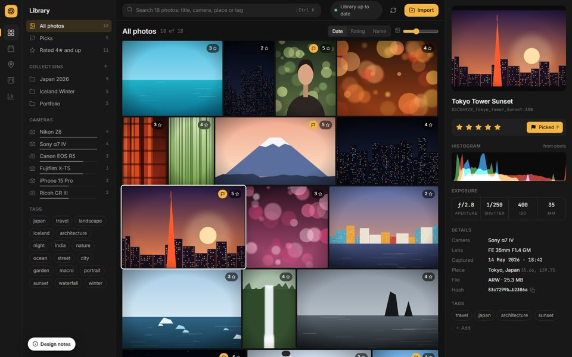
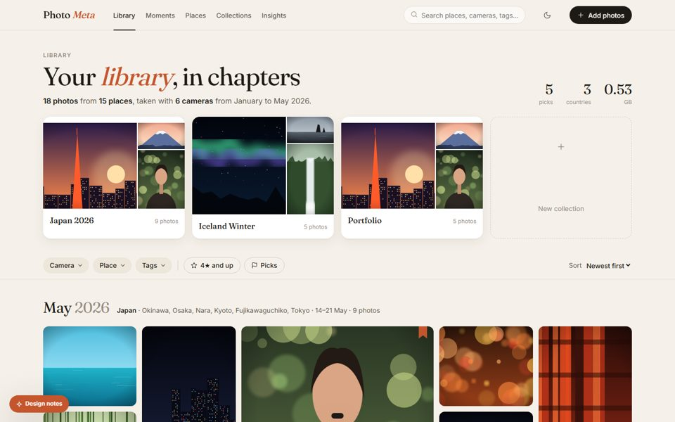
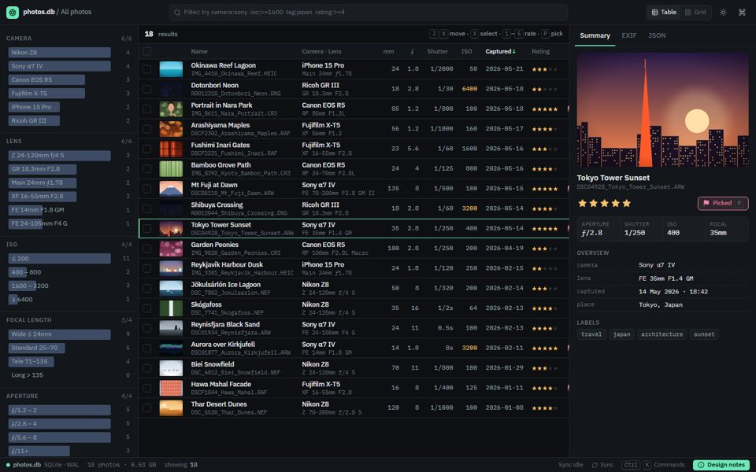

Each prototype is a working, clickable mock-up on the same 18-photo sample library. Filters, rating, picking, selection and keyboard shortcuts all work. Open one, then press Design notes to see what changed in each component compared with today's UI, and why.

Photo-first and neutral. The interface steps back so the pictures carry the colour. Built for culling and rating.

Editorial and warm. The library reads like a photo book, with trips as chapters and metadata as captions.

Dense and keyboard-first: the library as data, with an IDE-style workspace for metadata power users.
iso:>=1600 tag:night| A · Darkroom | B · Atelier | C · Console | |
|---|---|---|---|
| Best for | Culling, rating and picking large shoots | Browsing and reliving trips; sharing | Searching, auditing and comparing metadata |
| Mood | Quiet, neutral dark (Lightroom-like) | Warm paper, serif type (photo book) | Graphite and mint, monospace numbers (IDE) |
| Information density | Medium: photos dominate | Low: generous whitespace | High: about 20 rows of metadata per screen |
| Filtering | Library panel with count bars and chips | Chip bar, popovers and a describing sentence | Typed query tokens and clickable facet bars |
| Inspector | Side panel: preview, histogram, exposure strip | Full detail sheet with a minimap | Tabbed: Summary / EXIF / raw JSON |
| Change to the React code | Medium: new NavRail; restyle gallery, card and inspector | Medium to high: new information architecture (FilterBar, chapters, sheet) | Medium: QueryBar, PhotoTable, StatusBar; fits current components |
| Backend changes | None (uses existing dimensions) | None (groups by captured_at and GPS on the client) | None for make, tag, rating, date and text tokens; ISO/aperture/focal ranges would need new API fields |
Each prototype is a static HTML file with no build step. The sample photos are procedural SVGs from shared/sample-library.js; in the real app they come from /api/photos/{hash}/thumbnail. Fonts load from Google Fonts; everything else works offline.